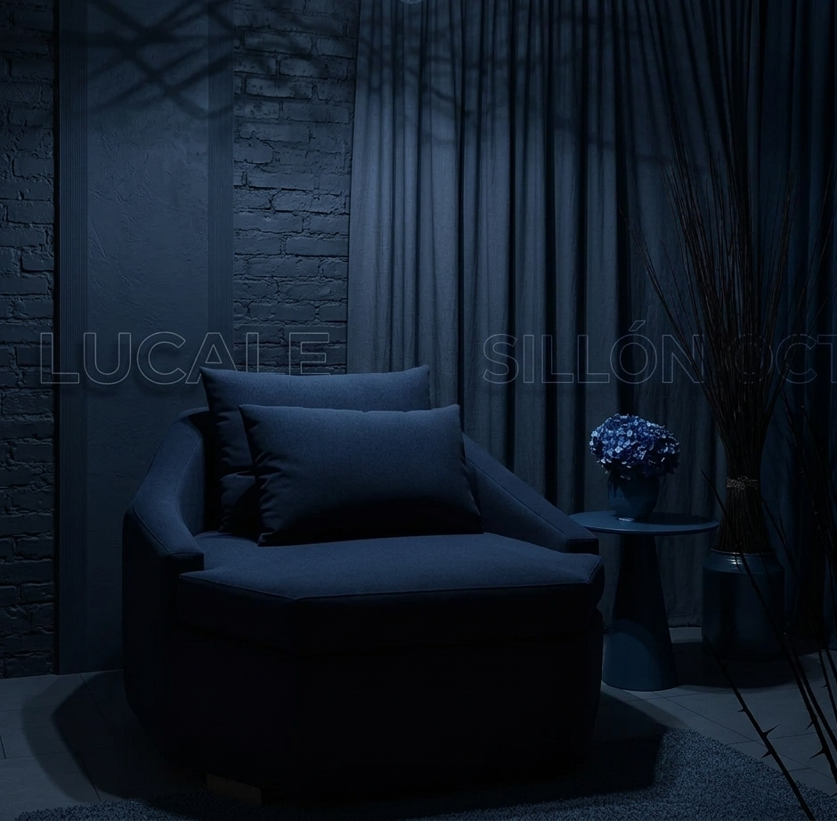

Música · Diseño · Gestión Cultural
Lucale es un creador multidisciplinario que articula la narrativa del rap con la precisión del diseño industrial. Su trayectoria ha sido documentada por instituciones académicas y medios nacionales.
Innovación geométrica: Creador del Sillón Octa ®. Modelo con diseño registrado ante el INPI.

Registro fotográfico y documental de la escena urbana.